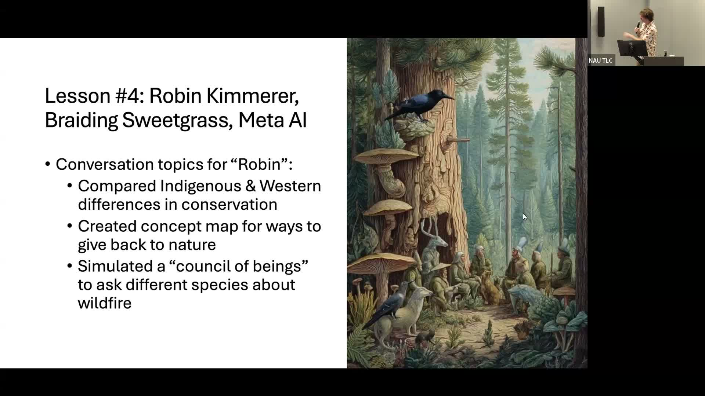

Conversations with Conservationists: Simulating AI Dialogue with Environmental Authors
Using AI to let students converse with Aldo Leopold, Rachel Carson, and other conservation authors after completing their readings.
Presented by Derek Uhey, Instructor in Forestry, NAU
About This Project
Students in FRST 222 (Environmental Conservation) read foundational texts by conservationists including Aldo Leopold, Rachel Carson, Mark Reisner, and Robin Kimmerer. Derek Uhey wanted to extend those readings beyond a single classroom discussion, particularly since many of the authors are long deceased and cannot be brought in as guest speakers. He designed a series of lessons in which students come to class having completed a reading, then use AI to simulate a conversation with the author in small groups, exploring philosophical controversies, modern environmental dilemmas, and questions the text left open.
Student feedback revealed genuine enthusiasm for the debates and controversies that emerged from these AI conversations, even as some students initially resisted using AI in an environmental conservation course on ethical grounds. Uhey used that resistance productively, adding lessons on how AI works, its environmental footprint, and the ethics of AI use in conservation and education. Pre- and post-course surveys tracked whether student knowledge and attitudes toward AI changed over the semester. Results showed increased comfort and understanding, and the lessons on ethical AI use gave students a framework for thinking critically about the technology rather than simply accepting or rejecting it.
Project Highlights

